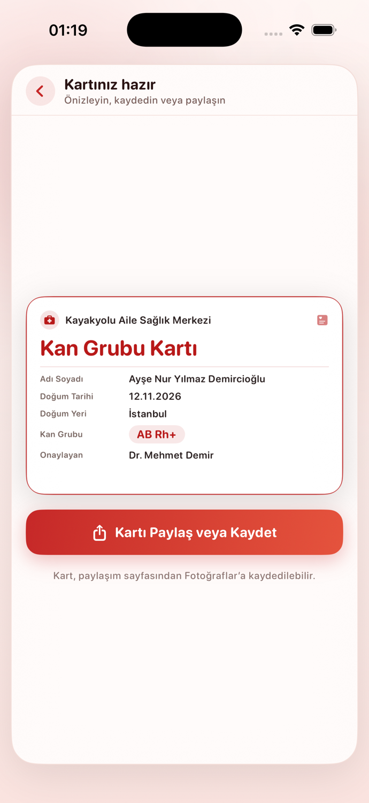
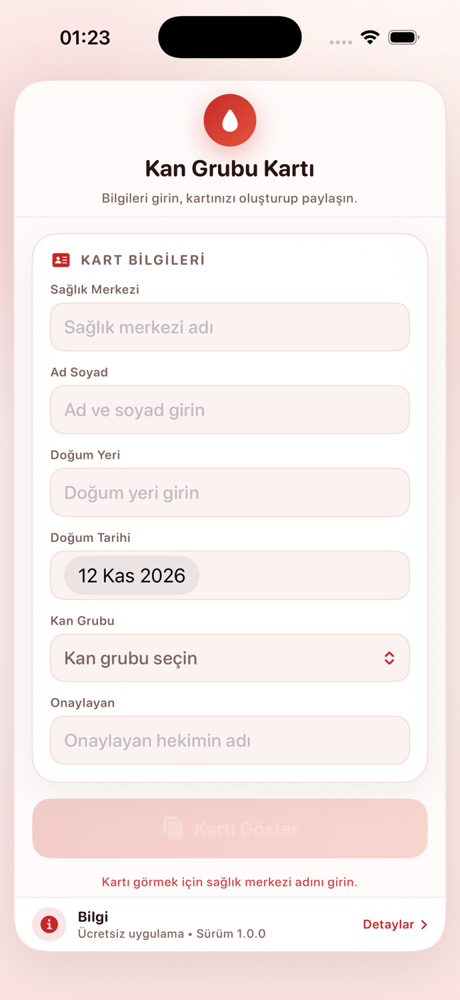
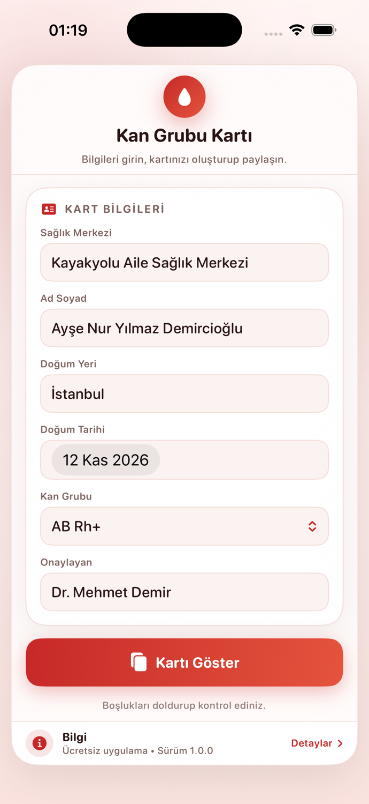
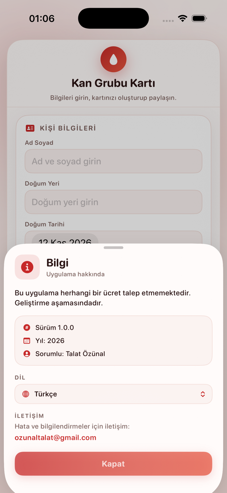

Altı Alanlı Form
Sağlık merkezi, ad soyad, doğum yeri, doğum tarihi, kan grubu ve onaylayan hekim.
Tek ekran · Tamamen cihazda
Sağlık merkezi, ad soyad, doğum yeri ve kan grubunuzu girin; uygulama paylaşılabilir, yüksek çözünürlüklü bir kart oluştursun. Hesap yok, sunucu yok, reklam yok.
iOS 16+ · iPhone ve iPad · Beş dilde

Özellikler
Tek ekran, altı alan ve paylaşılabilir yüksek çözünürlüklü bir çıktı.
Sağlık merkezi, ad soyad, doğum yeri, doğum tarihi, kan grubu ve onaylayan hekim.
A, B, AB ve O'nun Rh+ ve Rh− seçenekleri. Kartta AB Rh+ gibi uluslararası gösterim kullanılır.
Kart, yazdırma ve yakınlaştırma için 3× (1200 × 750 px) oluşturulur ve ekranda ölçeklenir.
Sistem paylaşım sayfası Mesajlar, Mail, AirDrop ve yazdırmayı kapsar; “Görseli Kaydet” Fotoğraflar'a ekler.
Beyaz zemin, kırmızı çerçeve, etiketli satırlar ve tek bakışta görünen kan grubu rozeti.
Türkçe, İngilizce, Almanca, Fransızca, İtalyanca. Bilgi panelinden yeniden başlatmadan değişir.
Ekranlar
Boş formdan paylaşıma hazır karta kadar dört adım.



Nasıl çalışır
Sağlık merkezi zorunludur; diğer alanları dilediğiniz kadar doldurabilirsiniz.
“Kartı Göster” ile kart ekranın ortasında, okunaklı haliyle görünür.
Görseli Fotoğraflar'a kaydedin ya da Mesajlar, Mail veya AirDrop ile gönderin.
Gizlilik
Form yalnızca bellekte tutulur; uygulama hiçbir kişisel veriyi saklamaz ve hiçbir ağ isteği yapmaz.
S.S.S.
Hayır. Uygulama herhangi bir ücret talep etmiyor ve kaynak kodu GitHub'da açık.
Hayır. Kart kişisel bir özettir; resmî tıbbi veya kimlik belgesi değildir. Acil durumlarda sağlık profesyonellerine başvurun.
Hiçbir yerde. Form yalnızca bellekte tutulur; uygulama kapandığında girilen bilgiler saklanmaz.
Kart ekranındaki paylaş düğmesi sistem paylaşım sayfasını açar. “Görseli Kaydet” ile Fotoğraflar'a ekleyebilirsiniz.
Alttaki bilgi barına dokunun, Dil bölümünden bir dil seçin. Form ve kart yeniden başlatmadan güncellenir.
Şimdilik iOS 16+ için iPhone ve iPad sürümü var. Proje geliştirme aşamasında.
Xcode 16 ile derleyip iPhone veya iPad'inizde çalıştırabilirsiniz.
Uygulama geliştirme aşamasındadır; App Store sürümü henüz yayınlanmadı.